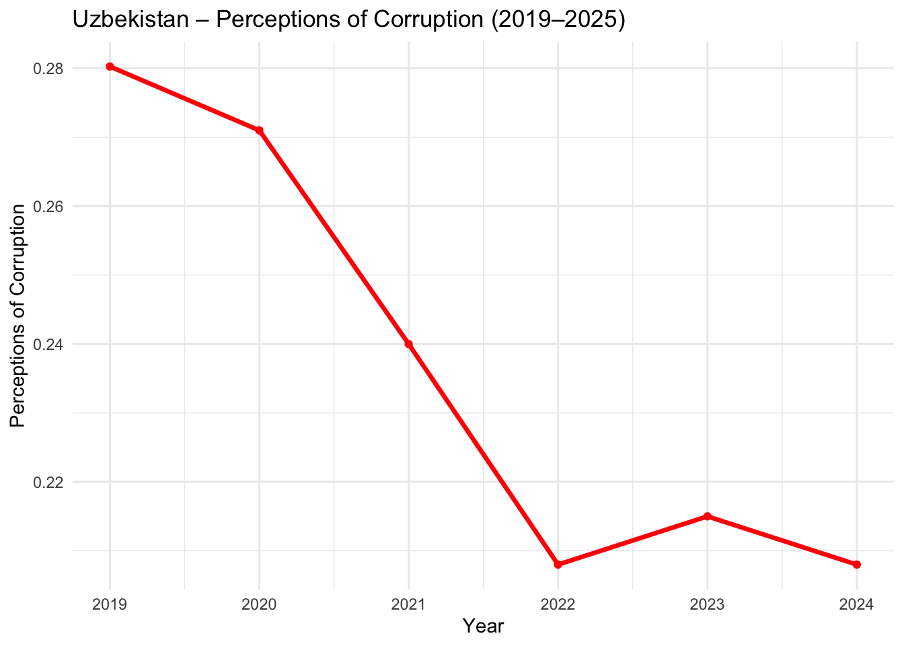
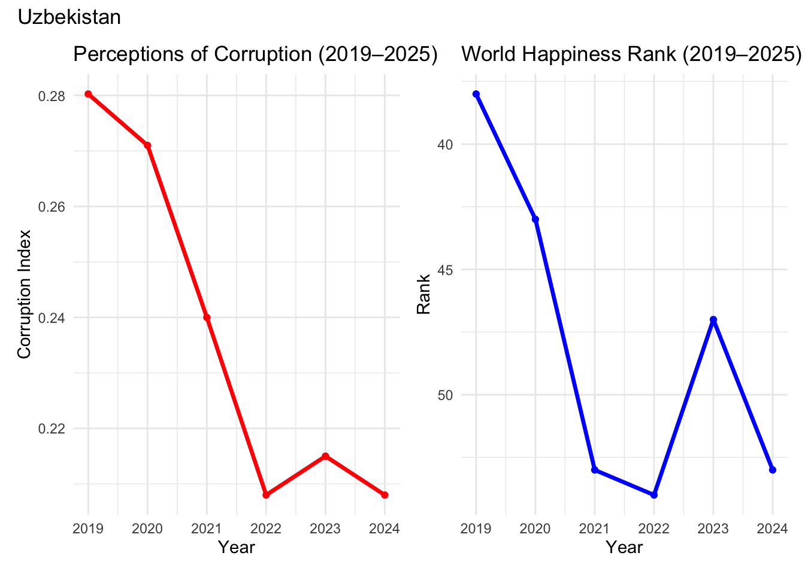

# A tibble: 1,969 × 13
Year Rank `Country name` `Life evaluation (3-year average)` `Lower whisker`
<dbl> <dbl> <chr> <dbl> <dbl>
1 2024 147 Afghanistan 1.36 1.30
2 2023 143 Afghanistan 1.72 1.67
3 2022 137 Afghanistan 1.86 1.80
4 2021 146 Afghanistan 2.40 2.34
5 2020 150 Afghanistan 2.52 2.45
6 2019 153 Afghanistan 2.57 2.51
7 2018 154 Afghanistan 3.20 NA
8 2017 145 Afghanistan 3.63 NA
9 2016 141 Afghanistan 3.79 NA
10 2015 154 Afghanistan 3.36 NA
# ℹ 1,959 more rows
# ℹ 8 more variables: `Upper whisker` <dbl>,
# `Explained by: Log GDP per capita` <dbl>,
# `Explained by: Social support` <dbl>,
# `Explained by: Healthy life expectancy` <dbl>,
# `Explained by: Freedom to make life choices` <dbl>,
# `Explained by: Generosity` <dbl>, …
# Create tibble for Uzbekistan, 2011-2025uzbekistan_corruption <- df %>%filter(`Country name`=="Uzbekistan", Year >=2011, Year <=2025) %>%select(Year, `Explained by: Perceptions of corruption`) %>%as_tibble()# View the tibbleuzbekistan_corruption
# A tibble: 13 × 2
Year `Explained by: Perceptions of corruption`
<dbl> <dbl>
1 2024 0.208
2 2023 0.215
3 2022 0.208
4 2021 0.24
5 2020 0.271
6 2019 0.280
7 2018 NA
8 2017 NA
9 2016 NA
10 2015 NA
11 2014 NA
12 2012 NA
13 2011 NA
Uzbekistan 2019-2025 corruption perception
# Filter Uzbekistan from 2019 onwarduzb_corruption <- df %>%filter(`Country name`=="Uzbekistan", Year >=2019)# Plot corruption indexggplot(uzb_corruption, aes(x = Year, y =`Explained by: Perceptions of corruption`)) +geom_line(color ="red", size =1.2) +geom_point(color ="red") +labs(title ="Uzbekistan – Perceptions of Corruption (2019–2025)",x ="Year",y ="Perceptions of Corruption") +theme_minimal()
Warning: Using `size` aesthetic for lines was deprecated in ggplot2 3.4.0.
ℹ Please use `linewidth` instead.

Uzbekistan 2019-2025 ranking in the happiness list 2019-2025
# Filter Uzbekistan from 2019 onwarduzb_rank <- df %>%filter(`Country name`=="Uzbekistan", Year >=2019)# Plot Rankggplot(uzb_rank, aes(x = Year, y = Rank)) +geom_line(color ="blue", size =1.2) +geom_point(color ="blue") +scale_y_reverse() +# Rank 1 at toplabs(title ="Uzbekistan – World Happiness Rank (2019–2025)",x ="Year",y ="Rank") +theme_minimal()
Uzbekistan corruption and happiness ranking line chart side by side to compare
library(patchwork)# Filter Uzbekistan from 2019 onwarduzb_data <- df %>%filter(`Country name`=="Uzbekistan", Year >=2019)# Plot 1: Corruption Indexp1 <-ggplot(uzb_data, aes(x = Year, y =`Explained by: Perceptions of corruption`)) +geom_line(color ="red", size =1.2) +geom_point(color ="red") +labs(title ="Perceptions of Corruption (2019–2025)",x ="Year",y ="Corruption Index") +theme_minimal()# Plot 2: Rankp2 <-ggplot(uzb_data, aes(x = Year, y = Rank)) +geom_line(color ="blue", size =1.2) +geom_point(color ="blue") +scale_y_reverse() +# Rank 1 at toplabs(title ="World Happiness Rank (2019–2025)",x ="Year",y ="Rank") +theme_minimal()# Combine side by side with main titlecombined_plot <- p1 + p2 +plot_annotation(title ="Uzbekistan")combined_plot

Uzbekistan ranking over time 2011 - 2025 with other countries
colnames(df)
[1] "Year"
[2] "Rank"
[3] "Country name"
[4] "Life evaluation (3-year average)"
[5] "Lower whisker"
[6] "Upper whisker"
[7] "Explained by: Log GDP per capita"
[8] "Explained by: Social support"
[9] "Explained by: Healthy life expectancy"
[10] "Explained by: Freedom to make life choices"
[11] "Explained by: Generosity"
[12] "Explained by: Perceptions of corruption"
[13] "Dystopia + residual"
ggplot(df, aes(x = Year, y = Rank, group =`Country name`)) +# All countries in graygeom_line(color ="gray", size =0.5, alpha =0.5) +# Highlight Uzbekistangeom_line(data =subset(df, `Country name`=="Uzbekistan"),aes(x = Year, y = Rank),color ="red", size =1.2) +scale_y_reverse() +# Optional: rank 1 at toplabs(title ="World Happiness Rank Over Time – Uzbekistan Highlighted",x ="Year",y ="Rank") +theme_minimal()
library(readr)library(dplyr)library(tidyr)library(ggplot2)library(readxl)library(patchwork)# ---------------------------# 1) File paths (change only if your files are elsewhere)# ---------------------------cpi_csv <-"/Users/ViktoriaAxelsson/Desktop/ti-corruption-perception-index.filtered/ti-corruption-perception-index.csv"happiness_xlsx <-"/Users/ViktoriaAxelsson/Desktop/WHR25_Data_Figure_2.1v3 (1).xlsx"# ---------------------------# 2) Load datasets# ---------------------------cpi_df <-read_csv(cpi_csv, show_col_types =FALSE)happiness_df <-read_excel(happiness_xlsx)# Quick column check (uncomment to inspect)# print(colnames(cpi_df))# print(colnames(happiness_df))# ---------------------------# 3) Prepare Uzbekistan CPI tibble (rescale 2.2 -> 22 by *10)# Data has columns: Entity, Year, Corruption Perceptions Index# ---------------------------uzbekistan_cpi <- cpi_df %>%filter(Entity =="Uzbekistan") %>%select(Year, `Corruption Perceptions Index`) %>%arrange(Year) %>%mutate(CPI_Score =`Corruption Perceptions Index`*10# convert 2.2 -> 22 )# ---------------------------# 4) Prepare Uzbekistan Happiness Rank tibble# Data has column "Country name" and "Year" and "Rank"# ---------------------------uzbekistan_rank <- happiness_df %>%filter(`Country name`=="Uzbekistan") %>%select(Year, Rank) %>%arrange(Year)# ---------------------------# 5) Filter to the years of interest (2016-2025 or 2019-2025 where appropriate)# ---------------------------years_min <-2016years_max <-2025# CPI plot data (we discussed showing 2016-2025 and also earlier but here we use 2016-2025)uzb_cpi_plot_df <- uzbekistan_cpi %>%filter(Year >= years_min & Year <= years_max)# Happiness plot datauzb_rank_plot_df <- uzbekistan_rank %>%filter(Year >= years_min & Year <= years_max)# ---------------------------# 6) Mark highlight years and set label positions# ---------------------------highlight_years <-c(2019, 2023, 2024)uzb_cpi_plot_df <- uzb_cpi_plot_df %>%mutate(highlight = Year %in% highlight_years)uzb_rank_plot_df <- uzb_rank_plot_df %>%mutate(highlight = Year %in% highlight_years)# For label nudging, set small nudges (tweak if labels overlap)# Note: because we use scale_y_reverse, vjust values may be inverted visually —# using nudge_y is simpler to place labels above the points in data space.uzb_cpi_plot_df <- uzb_cpi_plot_df %>%mutate(label_y = CPI_Score +5) # nudge label a bit "above" the point (in data units)uzb_rank_plot_df <- uzb_rank_plot_df %>%mutate(label_y = Rank -1.5) # since Rank is inverted, subtract to move label "up" visually# ---------------------------# 7) Build the corruption plot (inverted y-axis so line going down = more corruption)# ---------------------------corruption_plot <-ggplot(uzb_cpi_plot_df, aes(x = Year, y = CPI_Score)) +geom_line(color ="steelblue", size =1.25) +geom_point(aes(color = highlight), size =3) +scale_color_manual(values =c("TRUE"="orange", "FALSE"="red"), guide ="none") +# Label the highlighted points with the yeargeom_text(data =subset(uzb_cpi_plot_df, highlight ==TRUE),aes(x = Year, y = label_y, label = Year),size =3,vjust =0,show.legend =FALSE ) +scale_x_continuous(breaks =seq(years_min, years_max, by =1), minor_breaks =NULL) +scale_y_reverse(expand =expansion(mult =c(0.02, 0.08))) +# invert y-axis, add space at top-right for labelslabs(title ="Uzbekistan – Perceived Corruption (2016–2025)",x ="Year",y ="CPI Score (rescaled; higher = more corruption visually)" ) +theme_minimal(base_size =12) +theme(plot.title =element_text(size =12),axis.title =element_text(size =10),axis.text.x =element_text(size =8, angle =0),axis.text.y =element_text(size =9) )# Display and save corruption plotprint(corruption_plot)